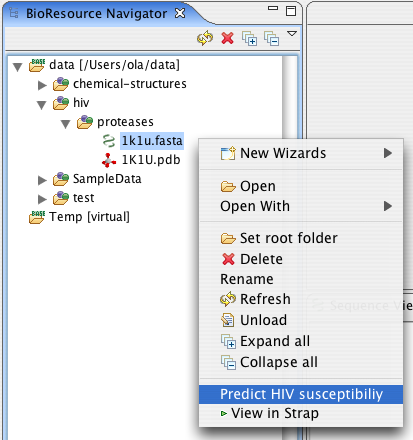
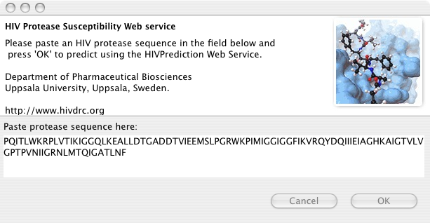
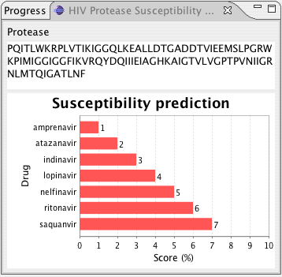

The HIV Protease Susceptibility Wizard opens with the sequence of the selected protease. Make changes if you like and click Finish.

The Result View opens and displays the susceptibility for 7 drugs. The Bioclipse console also echoes the results for simpe copy and paste.
